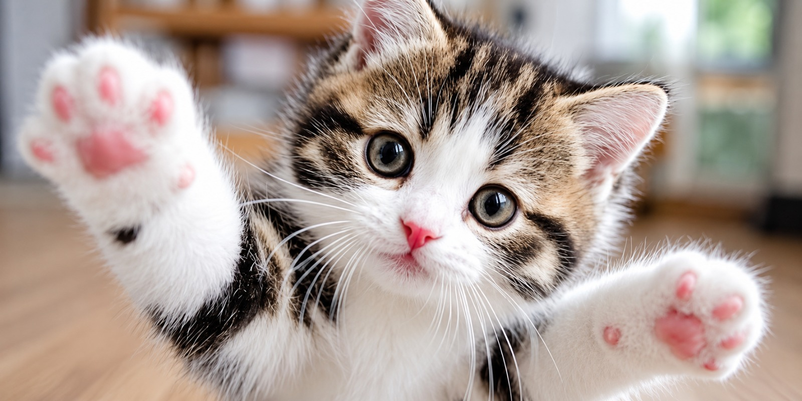
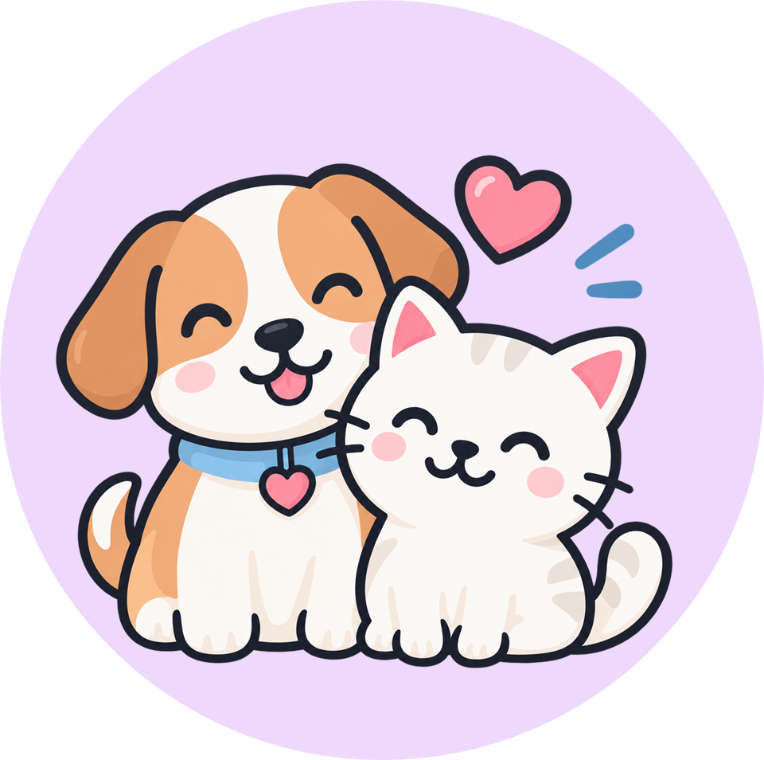
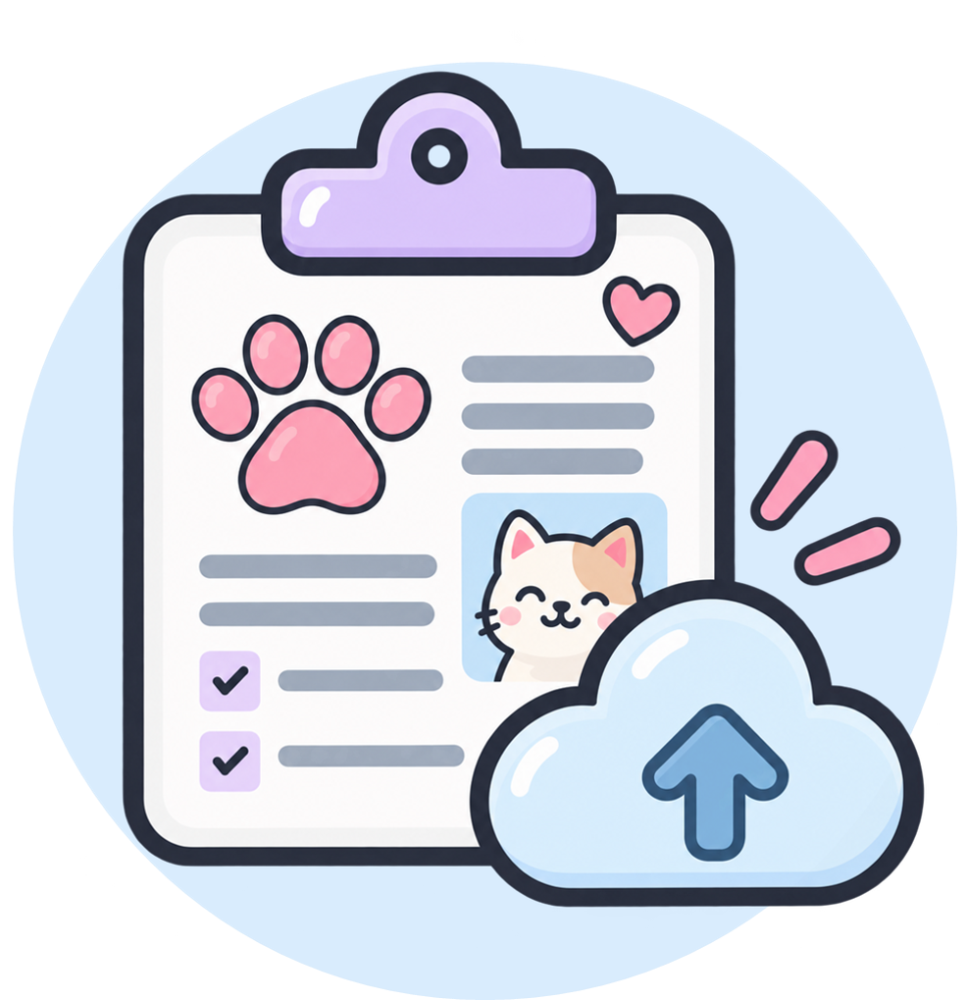

Consulta general
Atención médica para cuidar la salud de tu mascota.

Consultas, vacunación, cirugía y control de peso para perros, gatos, conejos y aves. Agenda tu hora en línea y lleva el historial clínico de tu mascota siempre a mano.
Solicitar una citaReserva en línea sin llamadas ni esperas.

Un equipo que trata a tu mascota como familia.

Vacunas y controles siempre a la mano.
Atención veterinaria pensada en la salud y el bienestar de tu mascota.
Atención médica para cuidar la salud de tu mascota.

Control y seguimiento del calendario de vacunación.

Seguimiento de la salud y antecedentes de tu mascota.

Registro y seguimiento de tratamientos veterinarios.
Años de experiencia
Pacientes atendidos al día
Médicos veterinarios
Atención con cariño
Campañas de vacunación, consejos de cuidado y novedades de la clínica para que siempre estés informado.


Si tienes otra duda, contáctanos y te respondemos con gusto.
Puedes solicitar tu cita en línea desde el botón "Solicitar cita", eligiendo el servicio, la fecha y la hora que más te acomoden. Nuestro equipo confirma la solicitud a la brevedad.
Además de perros y gatos, atendemos conejos y aves. Puedes ver el detalle de servicios disponibles por especie en la sección de servicios.
Sí. Una vez que creas tu cuenta, puedes revisar el historial de consultas, vacunas y tratamientos de tu mascota desde tu perfil, sin necesidad de llamar a la clínica.
Puedes reagendar o cancelar tu cita desde "Mis citas" con anticipación, para que ese horario quede disponible para otra mascota que lo necesite.
Solicita una cita de manera rápida y déjanos acompañarte en el cuidado, salud y bienestar de tu compañero.